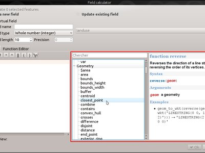
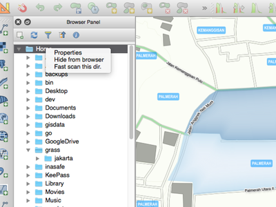
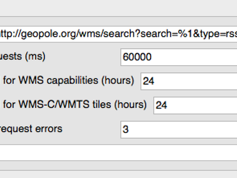
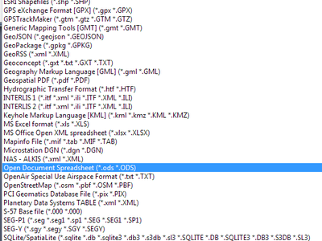
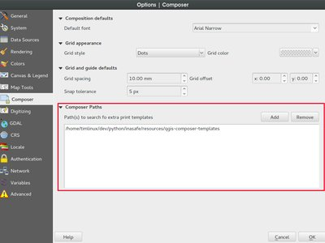
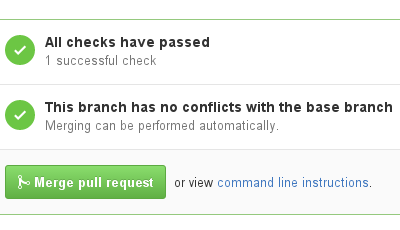
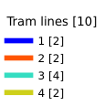
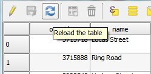

Changelog for QGIS 2.14¶

This is the changelog for the next release of QGIS - version 2.14 'Essen'. Essen was the host city to our developer meet ups in October 2012 and 2014.
Long Term Release
This is a special release since it is designated an 'LTR' (Long Term Release). LTR releases will be supported with backported bug fixes for one year, and will be in permanent feature freeze (i.e. no new features will be added, only bug fixes and trivial updates). Note that we are in discussion to extend the term of our LTR releases to two years, but for technical reasons we will not do this until QGIS 3.2.
The purpose of LTR releases is to provide a stable and less frequently changing platform for enterprises and organizations that do not want to deal with updating user skills, training materials etc. more than once per year. The success of the LTR is very much down to you, our beloved users - we need your support to help funding bug fixes and making sure in your support contracts with support providers specify that any bug fixes done on your behalf are applied to the LTR branch as well as our normal development branch.
If an LTR is important to you, please consider also directly supporting the QGIS project, or encourage your commercial provider to use LTR as a basis for your enterprise solution so that everyone may benefit from a stable platform that is being continuously improved and refined. Note that for users and organizations that like to live on the frontier, our regular four-monthly releases will continue unabated.
New Features in QGIS 2.14 'Essen'
If you are upgrading from QGIS 2.8 (our previous LTR version) you will find a great many new features in this release. We encourage you to peruse the changelogs for the intermediate non LTR 2.10 and 2.12 releases as this QGIS 2.14 includes all features published in those releases too. Note that 2.14 first enters the regular package repositories and will not immediately replace 2.8 in the LTR package repositories. That will happen when 2.16 is released.
Whenever new features are added to software they introduce the possibility of new bugs - if you encounter any problems with this release, please file a ticket on the QGIS Bug Tracker.
Thanks
We would like to thank the developers, documenters, testers and all the many folks out there who volunteer their time and effort (or fund people to do so). From the QGIS community we hope you enjoy this release! If you wish to donate time, money or otherwise get involved in making QGIS more awesome, please wander along to qgis.org and lend a hand!
QGIS is supported by donors and sponsors. A current list of donors who have made financial contributions large and small to the project can be seen on our donors list. If you would like to become an official project sponsor, please visit our sponsorship page for details. Sponsoring QGIS helps us to fund our six-monthly developer meetings, maintain project infrastructure and fund bug fixing efforts. A complete list of current sponsors is provided below - our very great thank you to all of our sponsors!
QGIS is Free software and you are under no obligation to pay anything to
use it - in fact we want to encourage people far and wide to use it
regardless of what your financial or social status is - we believe
empowering people with spatial decision making tools will result in a
better society for all of humanity. If you are able to support QGIS, you
can 
- Current QGIS Sponsors
- General
- Feature: Changed behaviour of strpos function
- Feature: Zoom to feature with right-click in attribute table
- Feature: Speed and memory improvements
- Feature: More expression variables
- Feature: Better control over placement of map elements
- Feature: Paid bugfixing programme
- Feature: Field calculator can be used to update feature's geometry
- Feature: New expression functions in 2.14
- Analysis tools
- Browser
- Data Providers
- Feature: Cache WMS capabililies
- Feature: Curved geometry support expanded
- Feature: Better handling of time and datetime fields
- Feature: Z/M support in delimited text provider
- Feature: Transaction groups for postgres editing
- Feature: Postgres provider PKI authentication
- Feature: Virtual layers
- Feature: More file extensions for GDAL and OGR providers file selectors
- Feature: Use ST_RemoveRepeatedPoints for server-side simplification with PostGIS 2.2 (or newer) layers
- Data management
- Feature: Removal of SPIT plugin
- Feature: DXF export: option to use title instead of name as DXF layer name in application and server
- Feature: Geometry type can be overridden in the vector save as dialog
- Feature: Vector joins are now saved within QLR layer-definition-files
- Feature: External Resource widget
- Feature: N:M relation editing
- Digitising
- Labelling
- Layer Legend
- Map Composer
- Plugins
- Processing
- Programmability
- QGIS Server
- Feature: STARTINDEX param in WFS GetFeature Request
- Feature: showFeatureCount in GetLegendGraphic
- Feature: Option to avoid rendering artefacts at edges of tiles
- Feature: Configuration checker in project properties
- Feature: WMS INSPIRE Capabilities
- Feature: Add short name to layers, groups and project
- Symbology
- User Interface
Current QGIS Sponsors¶
  Office of Public Works, Ireland, Ireland (12.2014-12.2016)
Office of Public Works, Ireland, Ireland (12.2014-12.2016) |
 GAIA mbH, Germany (11.2015-11.2016)
GAIA mbH, Germany (11.2015-11.2016) |
 Sourcepole AG, Switzerland (10.2014-10.2016)
Sourcepole AG, Switzerland (10.2014-10.2016) |
 AGH University of Science and Technology, Poland (06.2015-06.2016)
AGH University of Science and Technology, Poland (06.2015-06.2016) |
 State of Vorarlberg, Austria (03.2013-05.2016)
State of Vorarlberg, Austria (03.2013-05.2016) |
Asociación Geoinnova, Spain (03.2016-03-2017) |
Gis3W, Italy (01.2014-01.2017) |
GKG Kassel,(Dr.-Ing. Claas Leiner), Germany (03.2014-03.2017) |
CawdorForestry Resource Management, Scotland (02.2016-02.2017) |
ChameleonJohn, USA (02.2016-02.2017) |
2D3D.GIS, France (12.2015-12.2016) |
Dr. Kerth + Lampe Geo-Infometric GmbH, Germany (12.2015-12.2016) |
MappingGIS, Spain (11.2015-11.2016) |
HostingFacts.com, Estonia (12.2015-12.2016) |
Urbsol, Australia (11.2014-11.2016) |
Lutra Consulting, UK (10.2015-10.2016) |
WhereGroup GmbH & Co. KG, Germany (08.2015-08.2016) |
Nicholas Pearson Associates, UK (07.2015-07.2016) |
QGIS Polska, Poland (07.2015-07.2016) |
www.terrelogiche.com, Italy (06.2015-06.2016) |
www.geosynergy.com.au, Australia (05.2012-05.2013+06.2015-06-2016) |
Gaia3D, Inc., South Korea (05.2015-05.2016) |
Royal Borough of Windsor and Maidenhead, UK (04.2015-04.2016) |
Chartwell Consultants Ltd., Canada (03.2015-03.2016) |
Trage Wegen vzw, Belgium (03.2015-03.2016) |
|
GFI - Gesellschaft für Informationstechnologie mbH, Germany (03.2015-03.2016) |
GIS-Support, Poland (02.2015-02.2016) |
ADLARES GmbH, Germany (01.2015-01.2016) |
www.molitec.it, Italy (01.2014-01.2016) |
www.argusoft.de, Germany (06.2012-06.2013 + 12.2013-12.2015) |
Customer Analytics, USA (12.2014-12.2015) |


General¶
Feature: Changed behaviour of strpos function¶
The strpos function behaviour has been altered, so that no match now results in a "0" value and a non-zero value means a match at the specified character position. In older QGIS versions, a "-1" value would mean no-match and other return values represented the character position - 1.
Project files from earlier QGIS versions will need to be updated to reflect this change.

This feature was developed by Jürgen Fischer
Feature: Zoom to feature with right-click in attribute table¶
You can now zoom to any feature from within the attribute table (without having to select it first) by right-clicking and selecting zoom to feature.

Feature: Speed and memory improvements¶
- Saving a set of selected features from a large layer is now much faster
- Updating only selected features using the field calculator is faster
- Faster zoom to selected on large layers
- Much faster
get_featureexpression function (especially when an indexed column in the referenced layer is used) SelectByAttributeandExtractByAttributeprocessing algorithms are orders of magnitude faster, and can take advantage of database indices created on an attributePointsInPolygonprocessing algorithm is many magnitudes faster- Filtering the categories in a categorised renderer (eg, only showing some categories and unchecking others) is much faster, as now only the matching features are fetched from the data provider
- Significant reduction in the memory required for opening large vector layers
Feature: More expression variables¶
During rendering, new variables will be available:
@geometry_part_count: The part count of the currently rendered geometry (interesting for multi-part features)@geometry_part_num: 1-based index of the currently rendered geometry part
These are useful to apply different styles to different parts of multipart features:
@map_extent_width: The width of the currently rendered map in map units@map_extent_height: The height of the currently rendered map in map units@map_extent_center: The center point of the currently rendered map in map units
Variables relating to the operating system environment have also been added:
@qgis_os_name: eg 'Linux','Windows' or 'OSX'@qgis_platform: eg 'Desktop' or 'Server'@user_account_name: current user's operating system account name@user_full_name: current user's name from operating system account (if available)

This feature was funded by Andreas Neumann (the OS and user related variables)
This feature was developed by Nyall Dawson, Matthias Kuhn
Feature: Better control over placement of map elements¶
QGIS 2.14 has gained finer control over the placement of north arrows, scale bars and copyright notices on the main map canvas. You can now precisely set the position of these elements using a variety of units (including millimeters, pixels and percent).

Feature: Paid bugfixing programme¶
Prior to each release, we hold a paid bugfixing programme where we fund developers to clean up as many bugs as possible. We have decided to start including a report back on the paid bugfixing programme as part of our changelog report. Note that this list is not exhaustive.
- Sandro Santilli: Postgis Connection freeze if you press "Set filter" during loading of data
- Sandro Santilli: db_manager is unable to load rasters from connections with no dbname specified
- Sandro Santilli: Plugin layers do not work correctly with rotation
- Sandro Santilli: Crash in QgsGeomColumnTypeThread stopping connection scan #14140 #13806
- Sandro Santilli: Crash after bulk change of attribute value in shapefile
- Sandro Santilli: KMZ causes QGIS application crash (Mac)
- Sandro Santilli: QGIS 2.8.1 crash opening FileGDB (openGDB-Driver)
- Sandro Santilli: QGIS crashes when removing vertex of a multipart geometry
- Sandro Santilli: test -V -R qgis_analyzertest segfaults
- Sandro Santilli: output/bin/qgis_diagramtest segfaults
- Sandro Santilli: Overflow on primary key with negative values; crashes QGIS when editing #13958 #14262
- Sandro Santilli: PyQgsPostgresProvider test hangs in absence of test database
- Sandro Santilli: TestVectorLayerJoinBuffer hangs if database is not available
- Nyall Dawson: BLOCKER: Crash when opening layer properties dialog for geometryless vector layer
- Nyall Dawson: Broken server side filtering for OGR, Oracle and Spatialite layers
- Nyall Dawson: BLOCKER: Bad polygon digitizing in master
- Nyall Dawson: BLOCKER: Heatmap with expression triggers segfault
- Nyall Dawson: BLOCKER: unchecking one sub-layer of a categorized symbology leads to no features being drawn
- Nyall Dawson: HIGH: A Multiband image(e.g. landsat5,7,8) cannot be displayed in windows8
- Nyall Dawson: BLOCKER: CurvePolygons not drawn
- Nyall Dawson: BLOCKER: "Merge Attributes" tool doesn't change values when they are typed
- Nyall Dawson: HIGH: Filter legend by content is broken when renderer contains duplicate symbols
- Nyall Dawson: Fix issues with conversion of renderers to rule based renderer resulting in broken renderer
- Nyall Dawson: Fix categorised renderer does not store changes to the source symbol
- Nyall Dawson: HIGH: Avoid crash with raster calculator and huge raster inputs
- Nyall Dawson: HIGH: @value variable of simple symbol fill color wrongly gets modified in data-defined expression
- Nyall Dawson: HIGH: Editing Composer legend while filtered does not work
- Nyall Dawson: NORMAL: Deleting nodes - inconsistent behaviour
- Nyall Dawson: Fix handling of time value in attributes
- Nyall Dawson: Dialog tab order fixes
- Nyall Dawson: BLOCKER: crash when adding multiple files from browser panel
- Nyall Dawson: HIGH: Merge selected features tool corrupts data when columns are defined as "hidden"
- Nyall Dawson: Correctly handle LongLong fields in merge attribute dialog
- Nyall Dawson: Fix misleading display of calculation details in measure tool dialog (was misleading and inaccurate for many CRS/unit combinations)
- Nyall Dawson: NORMAL: max value for option "increase size of small diagrams" not sufficient
- Nyall Dawson: BLOCKER: Area not calculated correctly with OTF on
- Nyall Dawson: NORMAL: Incoherent lat/lon coordinates in a projected coordinate system project
- Nyall Dawson: NORMAL: make the field calculator compute areas and lengths in units other than map units #12939 #2402 #4857
- Nyall Dawson: NORMAL: different built-in tools calculate inconsistent polygon areas
- Nyall Dawson: NORMAL: In virtual fields $area function computes always values using "None/planimetric" ellipsoid
- Martin Dobias: raster layer drawn as garbage
- Martin Dobias: HIGH: Multi-threaded rendering and OTF reprojection issues #11441 #11746
- Martin Dobias: BLOCKER: Regression in "save as" dialog for shapefiles
- Martin Dobias: Slow loading of attribute table in debug mode
- Martin Dobias: BLOCKER: Crash when changing renderer type
- Martin Dobias: HIGH: Custom python renderer issues #1
- Martin Dobias: HIGH: Custom python renderer issues #2
- Martin Dobias: 2.5d renderer fixes
- Martin Dobias: HIGH: Long freeze when initializing snapping
- Martin Dobias: NORMAL: Loading of data-defined from xml
- Martin Dobias: Fix DB manager to work with SpatiaLite < 4.2
- Martin Dobias: NORMAL: Crash while rendering in debug mode
- Martin Dobias: BLOCKER: Fix selection / identification in spatialite views #14232 #14233
- Martin Dobias: BLOCKER: Fix drag&drop of spatialite tables
- Jürgen Fischer:Zoom to layer works incorrectly while layer editing
- Jürgen Fischer:Help viewer process running in the background with no help viewer (or even QGIS) open
- Jürgen Fischer:Spatialindex include path missing in some components
- Jürgen Fischer:compile fails attempting to generate qgsversion.h
- Jürgen Fischer:Edit widget configuration is stored twice
- Jürgen Fischer:Extra space in "IS NOT" operator makes the expression return wrong selection
- Jürgen Fischer:QGIS greadily allocates memory and crashes when editing moderately large shapefiles with the node tool
- Jürgen Fischer:French reprojection use ntf_r93.gsb (IGNF:LAMBE etc ..)
- Jürgen Fischer:Digitizing: "Reuse last entered attribute values" should not overwrite primary key column
- Jürgen Fischer:Issues in Case expression description
- Jürgen Fischer:shapefile vector writer: datetime field saved as date resulting in data loss of time
- Jürgen Fischer:Add help for some variable functions
- Jürgen Fischer:Virtual layers not working in Processing
- Jürgen Fischer:layer definition file load error
- Jürgen Fischer:QgsGeometry::fromWkb fails if WKB is different endian representation
- Jürgen Fischer:Debian build failure.
- Jürgen Fischer:PyQgsPostgresProvider test hangs in absence of test database
- Jürgen Fischer:wkb access out of bounds
- Jürgen Fischer:QGIS under Windows netCDF import reverses Y axis, Linux doesn't OSGeo4W #483
- Jürgen Fischer:OSGEO4W: Running offline install crashes installer
- Jürgen Fischer:OSGEO4W: Dependencies are not tracking on Windows Server 2003 x64
- Jürgen Fischer:OSGEO4W: installation from local package don't check the dependencies
- Jürgen Fischer:OSGEO4W: Setup starts downloading and installing packages before showing you a list to choose from
- Jürgen Fischer:OSGEO4W: Using -a for Advanced selects two options (command line install)
- Jürgen Fischer:OSGEO4W: Infinite license download during quite installation of szip
- Jürgen Fischer:Oracle provider deadlock
- Jürgen Fischer:fix saga path setting
Feature: Field calculator can be used to update feature's geometry¶
The field calculator can now be used to update feature geometries using the result of a geometric expression. This is a handy shortcut to do operations such as apply a buffer to a group of selected features, and together with all the newly added geometry functions in 2.14 makes for a very handy way to manipulate your geometries!

This feature was developed by Nyall Dawson
Feature: New expression functions in 2.14¶
Lots of new expression functions have been added for version 2.14:
relate: performs a DE-9IM geometry relation by either returning the DE-9IM representation of the relationship between two geometries, or by testing whether the DE-9IM relationship matches a specified pattern.- the
make_pointfunction now accepts optional z and m values, and a newmake_point_mfunction has been added for creation of PointM geometries. mandzfunctions for retrieving the m and z values from a point geometry- new
make_lineandmake_polygonfunctions, for creation of line and polygon geometries from a set of points reverse, for reversing linestringsevalfunction, which can evaluate a string as though it is an expression of its owntranslatefunction, for translating geometries by an x/y offsetdarkerandlighterfunctions, which take a color argument and make it darker or lighter by a specified amountradiansanddegrees: for converting angles between radians and degreespoint_on_surface: returns a point on the surface of a geometryexterior_ring: returns the exterior ring for a polygon geometryis_closed: returns true if a linestring is closed- new geometry accessor functions:
geometry_n(returns a specific geometry from within a collection),interior_ring_n(returns an interior ring from within a polygon) num_geometries: returns number of geometries inside a collectionnum_rings: returns number of rings in a polygon geometry objectnum_interior_rings: returns number of interior rings in a polygonnodes_to_points, for converting every node in a geometry to a multipoint geometrysegments_to_lines, for converting every segment in a geometry to a multiline geometryclosest_point: returns closest point in a geometry to a second geometryshortest_line: returns the shortest possible line joining two geometries
nodes_to_points and segments_to_lines are intended for use with
geometry generator symbology, eg to allow use of m and z values for
nodes/lines with data defined symbology.
Other improvements:
- geometries and features can now be used in conditional functions. For
instance, this allows expressions like
case when $geometry then ... else ...andcase when get_feature(...) then ... else ...

Analysis tools¶
Feature: More statistics available in merge attributes tool¶
When using either the merge attribute values or merge features tool, there are additional summary statistics available which can be used to set the resultant attribute values. These include Q1, Q3, inter-quartile ranges, majority and minority values, and number of unique values, amongst others.

This feature was developed by Nyall Dawson
Feature: z/m values are shown when using the identify tool¶
The identify tool is now able to show any z or m value present in the identified features. If the feature is a line or polygon, the tool will show the vertex number and x/y/z/m for the nearest vertex to the identified point. The identify tool now also shows the number of parts and part number for collections.

This feature was developed by Nyall Dawson
Feature: Unified handling of distance and area units and coordinate formats¶
In QGIS 2.14 the handling of various options regarding distance units, area units and coordinate display have been unified, simplified, and moved to Project Properties. This change brings numerous benefits, including:
- The coordinate format specified in Project Properties is consistently used whenever a coordinate is displayed to the user, including the identify tool results and the status bar display.
- The setting for distance and area units in Project Properties is
respected for all distance and area calculations, including the
measure tool, identify results, and use of the
$area,$lengthand$perimeterfunctions. - Additional area units have been added, including square yards, acres, hectares and more.
- Additional angular units have been added to the angle measurement tool, including rotations, minutes of arc and seconds of arc.
- It's now possible to show the coordinates in latitude and longitude in the status bar even when using a projected CRS.

This feature was funded by QGIS sponsored bug fixing program
This feature was developed by Nyall Dawson
Browser¶
Feature: Browser Improvements¶
The QGIS Browser is a filesystem, OGC Web Services and Database Connection panel that lets you easily drag and drop any layer from the aforementioned sources into your map canvas (or into the DB Manager window). Two useful new improvements were added for this release:
- Paths can be selectively hidden from the browser panel - this is useful to declutter your sources list and focus only on relevant directories.
- Load projects directly from the browser - now you can drag and drop a whole project into the QGIS map canvas and it will be loaded.

This feature was developed by Nathan Woodrow
Data Providers¶
Feature: Cache WMS capabililies¶
QGIS will now cache WMS GetCapabilities requests so that on
subsequent use response times will be quicker when using that service.
By default the cache period is 24 hours, but you can adjust this in the
Network tab of the QGIS Settings dialog.

This feature was developed by Jürgen Fischer
Feature: Curved geometry support expanded¶
The delimited text provider now supports curved WKT strings, and the memory provider (eg "temporary scratch" layers) has gained full support for curved geometries. Additionally, if QGIS has been built using GDAL versions 2.0 and up then QGIS will fully support curved geometries in supported file types (eg GML files).

This feature was developed by Nyall Dawson
Feature: Better handling of time and datetime fields¶
QGIS 2.14 has improved handling of time and datetime field types, including:
- PostgreSQL timestamp fields are correctly handled
- The expression engine now has full support for time fields
- The expression builder now shows preview calculation results for date, time, date time and interval calculations
- Time fields are fully supported by vector file layers (depending on file format), PostgreSQL, MS SQL Server and temporary scratch layers
- Saving layers to vector files will preserve time fields if supported by vector layer format (eg MapInfo .tab files)

This feature was developed by Jürgen Fischer, Nyall Dawson
Feature: Z/M support in delimited text provider¶
The delimited text provider has gained support for WKT strings
containing Z and M coordinates. For example you can express a point with
z and measure elements like this : POINT ZM (1 1 5 60).

This feature was developed by Nyall Dawson
Feature: Transaction groups for postgres editing¶
A new option has been introduced to enable transactional editing.
When this option is enabled
- All layers from the same database are put into a transaction group
- When the first layer of a group is put into edit mode, all others are also put into edit mode automatically
- When a layer is edited, the changes are sent to the database immediately, allowing triggers and constraints to be applied immediately
- When one layer in a transaction group is committed, all layers are committed (database transaction)
- When one layer in a transaction group is rolled back, all layers are rolled back (database transaction)
This feature is currently Experimental. If you find any problems, please report them.
This is only implemented for postgres databases at the moment.

This feature was funded by SIGE
This feature was developed by Matthias Kuhn, OPENGIS.ch, based on work by Sourcepole
Feature: Postgres provider PKI authentication¶
The ability to use the QGIS Authentication Manager introduced in 2.12 has been extended to the PostGIS provider. This allows connecting to Postgres using basic or PKI authentication, with the credentials stored in the QGIS configuration. The new Postgres provider authentication can also be used in the DB manager.

This feature was funded by Boundless Spatial
This feature was developed by Luigi Pirelli
Feature: Virtual layers¶
Dynamic SQL queries can now be used on any kind of vector layers that QGIS is able to load, even if it the layer format itself has no support for SQL queries!
A new kind of vector layer called "virtual layer" is now available for that purpose. These allow you to create a virtual layer by defining a query (including support for aggregates and joins) from other layers in your project. The resultant layer will be a live, dynamic view of the query result, so any changes to the source layers will be automatically and immediately reflected in the virtual layer!
The supported SQL dialect is SQLite with Spatialite functions. QGIS expression functions can also be used in queries. Any kind of vector layers can be accessed in the query, including multiple layers from different data providers to make joins.
Support for virtual layers has also been added to DB Manager as well as to the Processing toolbox where a new 'Execute SQL' tool is available.

This feature was funded by MEDDE (French Ministry of Sustainable Development)
This feature was developed by Hugo Mercier / Oslandia
Feature: More file extensions for GDAL and OGR providers file selectors¶
For vector and raster files, QGIS relies on the GDAL/OGR library. It means that nearly any file format that can be opened by GDAL or OGR can be directly opened in QGIS. Until now, some file extensions were not added in the GDAL or OGR file selector, resulting in users believing that QGIS could not open or handle those file formats. To minimise this problem, some new extensions have been added to GDAL and OGR file selector filters:
For vector files:
- .thf for EDIGEO French cadastre format
- .ods for OpenDocument Spreadsheet LibreOffice format
- .xls for Microsoft Excel format
- .xlsx for Microsoft Excel OpenXML format
- .xml for NAS - ALKIS format
- .map for WAsP format
- .pix for PCIDSK format
- .gtm and.gtz for GPSTrackMaker format
- .vfk for VFK format
- .osm and .pbf for OpenStreetMap format
- .sua for SUA format
- .txt for OpenAir format
- .xml for Planetary Data Systems TABLE format
- .htf for Hydrographic Transfer Format
- .svg for SVG format
- .gen for ARCGEN
- .sxf for Storage and eXchange Format
- .pdf for Geospatial PDF vector format
- .sgy and .segy for SEG-Y format
- .seg, .seg1, .sp1, .uko, .ukooa for SEGUKOOA format
- .ovf for VRT vector file format
- .kmz for compressed KML (KMZ) format
- .db3, .s3db, .sqlite3, .db3, .s3db, .sqlite3 for SQLite/Spatialite format
- .sl3 for SQLite Spatial (FDO) format
- CouchDB Spatial (via URL)
For raster files:
- .ovr for vrt raster file format

This feature was developed by Médéric Ribreux
Feature: Use ST_RemoveRepeatedPoints for server-side simplification with PostGIS 2.2 (or newer) layers¶
When using a PostGIS 2.2 instance, QGIS now uses the ST_RemoveRepeatedPoints function instead of the ST_SnapToGrid function to process server-side simplification, as described by Paul Ramsey.
This method will decrease the number of vertices of the geometries that QGIS needs to download from the server, which will increase rendering speed and save bandwith between QGIS and the PostgreSQL server.

This feature was developed by Michaël Douchin @kimaidou
Data management¶
Feature: Removal of SPIT plugin¶
The "SPIT" plugin is no longer bundled with QGIS, as the plugin was unmaintained and has been surpassed by DB Manager and the processing database import algorithms.

This feature was developed by Nathan Woodrow
Feature: DXF export: option to use title instead of name as DXF layer name in application and server¶

This feature was funded by City of Uster
This feature was developed by Jürgen Fischer
Feature: Geometry type can be overridden in the vector save as dialog¶
This makes it possible to do things like save a geometryless table WITH a geometry type, so that geometries can then be manually added to rows. Previously this was only possible to do in QGIS by resorting to dummy joins or other workarounds.
Additionally, options have been added for forcing the output file to be multi type, or include a z-dimension.

This feature was developed by Nyall Dawson
Feature: External Resource widget¶
A new form widget is now available. It is named "External resource" and it allows a more complete handling of attributes assigned to file paths storing. Here is a complete summary of the widget features:
- You can set an extension filter to force the storing of fixed file formats. If a filter is set, the file selector will only show file names that are relevant to the filter (it is still possible to select any file by using '*' character in the search field). Filter syntax is the same than Qt widget QFileDialog::getOpenFileName.
- You can set a default path. Each time a user triggers the widget, a file selector will open at the default path (if set). If no default path has been set, the file selector will use the last path selected from an "External resource" widget. If the widget has never been used, the file selector defaults to opening on the project path.
- You can define and set relative path storing. Relative path storing will allow you to save only the part of the path which is after the default path (if default path is set) or the current project path. This is particularly useful when you want to save long paths into limited size attributes (like text attributes for Shapefiles which are limited to 254 characters), or for creating self-contained project and data file archives for distribution.
- Another new feature to make the widget easier to use is that file paths can now be displayed as hyperlinks. Clicking the hyperlink will directly open the linked file from QGIS. You can configure this option to display the full path of the file or only its file name. The file will be opened using the default handler for that file format from your operating system.
- You can also use a URL instead of a file path. The widget will interpret it as a URL and you will be able to open the linked web page directly in your default web browser.
- You can choose to store directory paths instead of file paths.
- There is an integrated document viewer in this widget. You can use it to display pictures or webpages directly into QGIS. The file chooser for the integrated viewer will benefit from all the above mentioned options.
For more information on configuration options, you can use the tool tips of the configuration dialog box.
The main aim of this new widget is to fix and improve the two existing 'File name' and 'Photo' widgets, and replace them with a single unified widget. For the moment, you can still use the old widgets but they will be deprecated and removed for QGIS 3.0. We recommend to switch your projects to use the new 'External Resource' widget now.
This feature was developed by:
- Denis Rouzaud
- Matthias Kuhn at OPENGIS.ch
- Médéric Ribreux

Feature: N:M relation editing¶
This adds the possibility to manage data on a normalised relational database in N:M (many to many) relations. On the relation editor in a form, the tools to add, delete, link and unlink also work on the linking table if a relation is visualized as a N:M relation.
Configuration is done through the fields tab where on the relation a second relation can be chosen (if there is a suitable relation in terms of a second relation on the linking table).
Limitations:
QGIS is not a database management system.
It is based on assumptions about the underlying database system. In particular:
- it expects an
ON DELETE CASCADEor similar measure on the second relation - it does not take care of setting the primary key when adding features. Either users need to be instructed to set them manually or - if it's a database derived value - the layers need to be in transaction mode

This feature was funded by République et canton de Neuchâtel, Ville de Pully, Ville de Vevey
This feature was developed by Matthias Kuhn
Digitising¶
Feature: Configurable rubber band color¶
You can now set the rubber band width and color used for digitising.

Feature: Trace digitising tool¶
The new trace digitising tool is an advanced digitising tool that allows you to digitise features in one layer by tracing features in another layer.
The trace tool:
- uses Dijkstra’s shortest path algorithm to find traceable routes
- can trace routes over multiple distinct features
- can be used with Advanced Digitising tools (e.g. reshaping)
- can be enabled and disabled by pressing T on your keyboard while digitising
- is fast and easy to use
You can read more about this feature here and with this tutorial.
This feature was funded by: The Royal Borough of Windsor and Maidenhead, Neath Port Talbot County Borough Council, Ujaval Gandhi, Surrey Heath Borough Council, Matias Arnold, Northumberland National Park Authority, Buccleuch Estates Limited, Countryscape

This feature was developed by Lutra Consulting
Labelling¶
Feature: "Cartographic" placement mode for point labels¶
In this placement mode, point label candidates are generated following ideal cartographic placement rules, eg label placements are prioritised in the order:
- top right
- top left
- bottom right
- bottom left
- middle right
- middle left
- top, slightly right
- bottom, slightly left
(respecting the guidelines from Krygier and Wood (2011) and other cartographic master works)
Placement priority can also be set for an individual feature using a data defined list of prioritised positions. This also allows for only certain placements to be used, so eg for coastal features you could prevent labels being placed over the land.

This feature was funded by Andreas Neumann
This feature was developed by Nyall Dawson
Feature: Applying label distance from symbol bounds¶
When this setting is active, the label distance applies from the bounds of the rendered symbol for a point instead of the point itself. It is especially useful when the symbol size is not fixed, eg if it is set by a data defined size or when using different symbols in a categorised renderer.
Note that this setting is only available with the new Cartographic point label placement mode.

This feature was funded by Andreas Neumann
This feature was developed by Nyall Dawson
Feature: Control over label rendering order¶
A new control for setting a label's "z-index" has been added to the labeling properties dialog. This control (which also accepts data-defined overrides for individual features) determines the order in which labels are rendered. Label layers with a higher z-index are rendered on top of labels from a layer with a lower z-index.
Additionally, the logic has been tweaked so that if 2 labels have matching z-indexes, then:
- if they are from the same layer, a smaller label will always be drawn above a larger label
- if they are from different layers, the labels will be drawn in the same order as the layers themselves (ie respecting the order set in the legend)
Diagrams can also have their z-index set (but not data defined) so that the order of labels and diagrams can be controlled.
Note that this does NOT allow labels to be drawn below the features from other layers, it just controls the order in which labels are drawn on top of your map.

This feature was developed by Nyall Dawson
Feature: Actual rendered symbol is now considered as an obstacle for point feature labels¶
Previously, only the point feature itself was treated as an obstacle for label candidates. If a large or offset symbol was used for the point, then labels were allowed to overlap this symbol without incurring the obstacle cost.
Now, the actual size and offset of the rendered symbol are considered when detecting whether a label collides with a point feature. The result is that QGIS now avoids drawing labels over point symbols in more circumstances.

This feature was funded by City of Uster
This feature was developed by Nyall Dawson
Layer Legend¶
Feature: Paste a style to multiple selected layers or to all layers in a legend group¶
This feature adds the possibility to paste the style of one layer to a layer group or selected layers.

This feature was developed by Salvatore Larosa
Feature: Filter legend by expression¶
It is now possible to filter elements of the legend by an expression. It has been designed with the filtering of rule-based or categorized symbology in mind.
The legend filtering is available in the legend of the main application as well as for legend components of the QGIS composer.

This feature was funded by Agence de l'Eau Adour-Garonne (Adour-Garonne Water Agency)
This feature was developed by Hugo Mercier / Oslandia
Map Composer¶
Feature: New options for filtering legend elements¶
This introduces two new options to filter legend elements.
The first, filter by expression, allows users to set an expression for filtering which features should be shown in the legend. Only symbols with a matching feature will be shown in the legend.
The second filter option allows a composer legend to be filtered to include only items which are contained within the current atlas polygon.

This feature was developed by Hugo Mercier (Oslandia)
Feature: Additional paths for composer templates¶
You can now define custom paths that should be used for QGIS to find
composer templates. This means that you can for example put a bunch of
templates in a network share and give your users access to that folder
in addition to the local ones that exist on their own system. To manage
the composer template search paths, look in
Settings -> Options -> Composer

This feature was developed by Nathan Woodrow
Feature: Multiple selection of compositions in manager¶
The Composer Manager has gained support for managing multiple compositions at the same time. You can now open or delete multiple compositions at once by using the Ctrl key and selecting multiple compositions from the list.

This feature was developed by Médéric Ribreux
Plugins¶
Feature: Authentication system support for plugin manager¶
Support for the new authentication system has been added to the plugin manager. This allows users to apply authentication configurations for connections to plugin repositories, and system administrators to create authenticated access to plugin repositories and/or the download packages of plugins.

This feature was funded by Boundless Spatial
This feature was developed by Larry Shaffer
Processing¶
Feature: New algorithms in 2.14¶
QGIS geoalgorithms:¶
- Smooth: for smoothing line or polygon layers.
- Reverse line direction.
GDAL/OGR geoalgorithms:¶
- gdal2tiles: builds a directory with TMS tiles, KMLs and simple web viewers.
- gdal_retile: retiles a set of tiles and/or build tiled pyramid levels.
Feature: Unit Tests Q/A¶
To guarantee the long-term stability of the processing module, a new testing framework has been introduced.
Processing geo-algorithms are executed after every change which hits the QGIS source code and the result is compared to a control dataset to guarantee correct behavior. This gives an immediate feedback about possible regressions.
It is possible - and desired - that more tests are added. You can read more about how to participate.

This feature was funded by The QGIS Project
This feature was developed by Matthias Kuhn, OPENGIS.ch
Feature: Improved toolbox¶
The simplified interface has been removed, and a new and more user-friendly system of managing providers has been added. The algorithm search functionality now also searches in providers that are not active, and suggests activating them.

This feature was funded by Boundless Spatial
This feature was developed by Víctor Olaya

Feature: More informative algorithm dialog¶
A short description is now shown along with the algorithm parameters, making it easy to understand the purpose of the algorithm.
Also, batch processes can be now started from the algorithm dialog, using the “Run as batch process…” button

Feature: GRASS7 v.net modules¶
QGIS 2.14 Processing now incorporates v.net GRASS modules (only for GRASS7). Those modules are a set of algorithms that perform on graph line vector layers (networks). A graph is a set of vertices (or nodes or points) linked together with a set of edges (or arcs or lines). The set of edges is often called a network.
Thanks to v.net modules, you can easily calculate the shortest path between a set of nodes on the network or even compute the isochrone map from a set of central points. you can also easily solve the complex travelling salesman problem from a network and a set of travel nodes.
v.net algorithms often use a line vector layer (for the network) and a point layer which represents the nodes you want to use for the computation. Be sure to use a true graph line vector layer for the network layer (edges need to be connected on vertex without intersection between edges) to avoid problems. You can also use any network layer attribute for cost calculation (the content of the attribute is used to calculate the travel cost of the edge).
Here is a quick summary of the different algorithms that have been included into Processing:
- v.net.alloc: Allocates subnets from nearest centres.
- v.net.allpairs: Computes the shortest path between all pairs of nodes in the network.
- v.net.arcs: Creates arcs from a file of points.
- v.net.articulation: Computes the articulation points in the network.
- v.net.bridge: Computes bridges of the network.
- v.net.centrality: Computes degree, centrality, betweenness, closeness and eigenvector centrality of each node of the network.
- v.net.components: Computes strongly and weakly connected components in the network.
- v.net.connect: Connects points (nodes) to nearest arcs in the network (and adds edges if necessary).
- v.net.connectivity: Computes vertex connectivity between two sets of nodes in the network.
- v.net.distance: Computes the shortest path via the network between two sets of nodes.
- v.net.flow: Computes the maximum flow between two sets of nodes in the network.
- v.net.iso: Computes the isochrone map of the network from a set of nodes.
- v.net.nodes: Extracts nodes of a network/graph layer.
- v.net.nreports: Reports information about the nodes.
- v.net.path: Finds the shortest path on the network between two nodes.
- v.net.report: Reports information about the edges of the network.
- v.net.salesman: Computes the travelling salesman path from a set of nodes on the network.
- v.net.spanningtree: Computes the Spanning tree of the network.
- v.net.steiner: Creates a Steiner tree for the network and given nodes.
- v.net.visibility: Performs visibility graph construction.
Use the "Help" tab on each of the v.net Processing algorithm to read the official GRASS7 documentation directly for more information.

This feature was developed by Médéric Ribreux
Programmability¶

Feature: Store python init code into the project¶
Adds an option and code editor to store python form init code into the project (and the DB, since it's in the style section)

Feature: New filtering and sorting options for QgsFeatureRequest¶
QgsFeatureRequest now supports setting a maximum limit for the number of features returned. In many cases this limit is passed to the provider, resulting in significant performance gains when only a set number of features are required.
Additionally, QgsFeatureRequest now supports setting ordering for returned features. Again, in many cases this ordering is delegated to the provider so that it is performed "server side" for optimal performance.

Feature: Custom feature form Python code options¶
This feature adds more options to the custom feature form Python code:
- load from file (with file picker widget)
- load from the environment (i.e. a plugin or a Python init function)
- directly enter the code in an input widget (new option)
The configuration options, including the custom Python code entered in the dialog are stored in the project as well as in the style QML settings and can be exported/restored from a DB.

This feature was funded by ARPA Piemonte
This feature was developed by Alessandro Pasotti (ItOpen)
New core classes¶
- QgsAttributeEditorElement - abstract base class for any elements of a drag and drop form
- QgsAttributeEditorContainer - container for attribute editors, used to group them visually in an attribute form
- QgsAttributeEditorField - element for loading a field's widget onto a form
- QgsAttributeEditorRelation - element for loading a relation editor widget onto a form
- QgsEditFormConfig - stores and sets configuration parameters for attribute editor forms
- QgsFeatureFilterProvider - provides an interface for modifying a QgsFeatureRequest in place to apply additional filters to the request
- QgsTracer - provides graph creation and shortest path search for vector layers
- QgsTransactionGroup - interface for grouping layers into single edit transactions
- QgsUnitTypes - helper functions for various unit types and conversions between units (eg distance and area units)
- QgsVirtualLayerDefinition - class for manipulating the definitions of virtual layers
- QgsVirtualLayerDefinitionUtils - helper utilities for working with QgsVirtualLayerDefinition objects
- Qgs25DRenderer - 2.5D symbol renderer
- QgsGeometryGeneratorSymbolLayerV2 - geometry generator symbol layer
- QgsFeatureRequest.OrderByClause - class for specifying a field sort order for feature requests
- QgsFeatureRequest.OrderBy - a prioritized list of order by clauses for sorting
New GUI classes¶
Reusable widgets:¶
- QgsExternalResourceWidget - widget for displaying a file path with a push button for an "open file" dialog, and optional display of pictures or HTML files
- QgsFileWidget - widget for selecting a file or a folder
- QgsLegendFilterButton - tool button widget that allows enabling or disabling legend filter by contents of the map
- QgsMapCanvasTracer - an extension of QgsTracer that provides extra functionality for interacting with map canvases
- Qgs25DRendererWidget - widget for setting properties for a 2.5D renderer
- QgsColorWidgetAction - widget action for embedding a color picker inside a menu
Reusable dialogs:¶
- QgsStyleV2GroupSelectionDialog - dialog for grouping selections in a style
- QgsGroupWMSDataDialog - dialog for setting properties for a WMS group
- QgsOrderByDialog - dialog for specifying sort ordering of fields
QGIS Server¶
Feature: STARTINDEX param in WFS GetFeature Request¶
`STARTINDEX is standard in WFS 2.0, but it's an extension for WFS
1.0 implemented in QGIS Server.
STARTINDEX can be used to skip some features in the result set and
in combination with MAXFEATURES provides for the ability to use WFS
GetFeature to page through results. Note that STARTINDEX=0 means
start with the first feature, skipping none.
This feature was developed by 3Liz
Feature: showFeatureCount in GetLegendGraphic¶
Add non-standard parameter showFeatureCount to add feature count in the legend. To activate it,showFeatureCount can be set to TRUE or 1.
This feature needs a fake X server.

This feature was developed by 3Liz
Feature: Configuration checker in project properties¶
To assist with configuring a project for QGIS Server, a new configuration checker has been added to project properties.
The checker tests for errors like:
- duplicate names or short names used as OWS names
- invalid OWS names
- missing vector layer encodings

This feature was funded by Ifremer
This feature was developed by 3Liz
Feature: WMS INSPIRE Capabilities¶
In the project properties the user can:
- activate INSPIRE capabilities
- select the language for the service, from 24 EU official languages + 5 regional languages
- choose the scenario for service metadata and specify their parameters
The WMS 1.3.0 capabilities reflects the INSPIRE configuration.

This feature was developed by 3Liz
Feature: Add short name to layers, groups and project¶
A number of elements have both a Name and a Title. The Name is a text string used for machine-to-machine communication while the Title is for the benefit of humans. For example, a dataset might have the descriptive Title Maximum Atmospheric Temperature and be requested using the abbreviated Name ATMAX.
Users can already set a title for layers and project. OpenGeospatial Web Services, OWS (WMS, WFS, WCS), name is based on the name used in the layer tree. This name is more a label for humans than a name for machine-to-machine communication.
To add the capability for users to define Name as a text string for machine-to-machine communication, this feature adds:
- short name line edits to layer properties
- WMS data dialog to layer tree group (short name, title, abstract)
- short name line edits to project properties
- add a regexp validator "^[A-Za-z][A-Za-z0-9._-]*" to short name line edit accessible through a static method
- add a TreeName element in the fullProjectSettings
If a short name has been set for layers, groups and project it is used by QGIS Sever as the layer name.

This feature was developed by 3Liz
Symbology¶

{kind=link}
{kind=link}
{kind=link}
Feature: Support for transparency in SVG color parameters¶
Non-bundled SVGs must add:
fill-opacity="param(fill-opacity)"
and
stroke-opacity="param(outline-opacity)"
to enable transparency support.
This feature was developed by Nyall Dawson
Feature: Easy duplication of symbol layers¶
A new "duplicate" button has been added to the symbol properties dialog, which allows symbol layers to be easily duplicated.

This feature was developed by Nyall Dawson
Feature: 2.5D Renderer¶
This adds a configuration interface and renderer that makes it easy to put all the pieces together which are required to get a 2.5D effect.
It allows for configuring some of the styling and is meant to create an easy-to-use setup.
Since every part of the system is built around QGIS' internal rendering and symbology engine, there is much to fine tune. To get all the possibilities, just change the renderer to a graduated, categorized or single symbol renderer upon creation and you will find full access to improve the style to your needs.
This feature was developed by:
- Matthias Kuhn at OPENGIS.ch
This feature was funded by:
- Regional Council of Picardy
- ADUGA
- Ville de Nyon
- Wetu GIT cc

Feature: Allow definition of rendering order for features¶
When features are required to be rendered in a particular order, this can be specified by using an arbitrary expression.
This can be configured in the layer's symbology configuration dialog and can be a simple field or a complex expression.
It also provides control over ascending or descending order as well as whether NULLs are first or last.
If possible, the request will be sent to the database (this depends on the complexity of the expression as well as the provider for the layer). If it is not possible to send the request to the database, the ordering will be performed on the local machine.
This is used by the 2.5D renderer to render features based on their distance from the "camera".
This is also available for plugins:
layer.getFeatures( QgsFeatureRequest().setOrderBy( 'name' ) ) -- alphabetical by name
This feature was developed by: Matthias Kuhn at OPENGIS.ch This feature was funded by: Regional Council of Picardy, ADUGA, Ville de Nyon, Wetu GIT cc

This feature was developed by Matthias Kuhn, OPENGIS.ch
Feature: Geometry generator symbols¶
Geometry generator symbols allow using the expression engine to modify the geometry before rendering or even creating new geometries while rendering based on feature attributes.
This can use all kinds of spatial operators like buffer, translate, intersect or extrude with parameters based on attributes only for the rendering without actually modifying the data in the source.
Examples¶
Fill style for polygon border¶
This generates a polygon which represents the outline of the original polygon (Example image)
difference( buffer( $geometry , 250 ), buffer( $geometry, -250 ) )
Different symbol layers can contain different geometry generators, this allows displaying different versions of a geometry at the same time. The 2.5D renderer serves as an example.

This feature was funded by Regional Council of Picardy, ADUGA, Ville de Nyon, Wetu GIT cc
This feature was developed by Matthias Kuhn, OPENGIS.ch
User Interface¶
Feature: Attribute table can be refreshed¶
An option to reload attributes within the attribute table is now available.

Feature: Directly set renderer and class symbol colors from context menu in legend¶
Shows a color wheel widget in the menu, which allows you to edit the color for a symbol interactively without even having to even open a single dialog!

This feature was developed by Nyall Dawson
Feature: Edit legend symbols directly from layer tree¶
This adds a new "edit symbol" item to the right-click menu for a renderer child legend item (eg categories for the categorised renderer). Selecting it opens a symbol editor dialog which allows for directly editing the class's symbol. It's much faster than opening the layer properties and going through the style tab. You can also double-click on a child item to open the symbol editor immediately.

This feature was developed by Nyall Dawson
Feature: Show/hide all legend items via the context menu¶
Allows toggling on/off all the symbol items for categorized/graduated/rule-based layers via the right click menu on an item. Previously you'd have to toggle each item manually one-by-one.

This feature was developed by Nyall Dawson